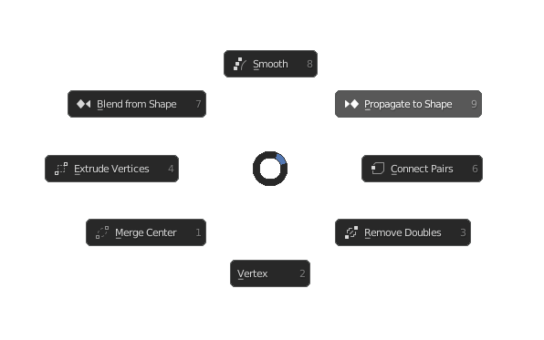

Mesh Vertices Menu
Hotkey: Ctrl+V
Functions / Table of Contents
- Smooth
- Propagate to Shape
- Connect Pairs
- Remove Doubles
- Vertex Menu
- Merge Center
- Extrude Vertices
- Blend from Shape
Smooth
Averages the angles between faces to smooth selected vertices.
Also see: Blender Manual
Propagate to Shape
Applies selected vertex locations to all other shape keys.
Also see: Blender Manual
Connect Pairs
Connects pairs of vertices with an edge. This will cut faces.
Also see: Blender Manual
Remove Doubles
Merges vertices together based on how close together they are.
Also see: Blender Manual
Vertex Menu
Switches the pie menu to the default blender vertex menu.
Also see: Blender Manual
Merge Center
Merges selected vertices at the selected point. You have the option of a first selected vertex, last selected or at the midpoint of selected vertices.
Also see: Blender Manual
Extrude Vertices
Extrudes vertices individually rather than as a face.
Also see: Blender Manual
Blend from Shape
Blends in a shape from a shape key.
Also see: Blender Manual